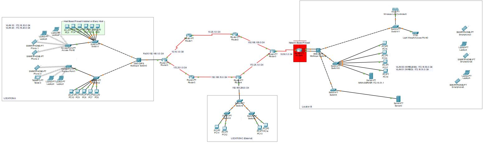
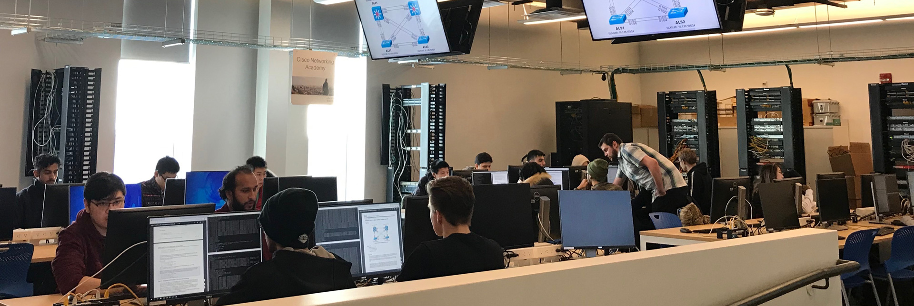
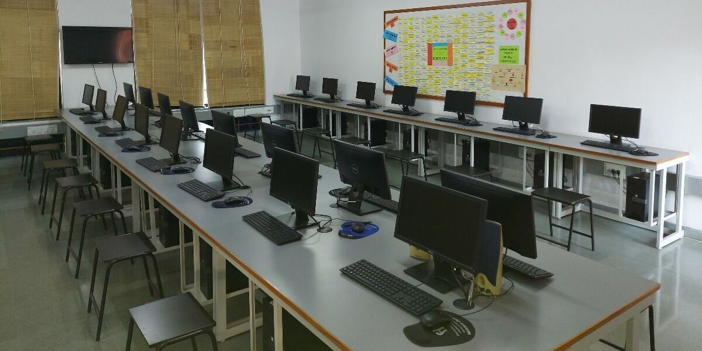

Learn penetration testing techniques with step-by-step tutorials.
The height of the .background-image div is set to 100vh (viewport height)
to make sure the background image covers the entire viewport. The content
in the header is centered using flexbox properties, and a semi-transparent

Secure and robust computer networking infrastructure
In the realm of higher education, where knowledge knows no bounds, the strength of a secure and robust computer networking infrastructure cannot be underestimated. At Cipher Knights, we stand as your unwavering defenders, committed to fortifying the digital foundations of colleges and universities. While our cybersecurity consultants excel in proactively identifying and shoring up vulnerabilities within your institution's defenses through rigorous penetration tests and vulnerability assessments, we understand that the true safeguarding of academic pursuits begins with a resilient network. Our mission is to design, optimize, and secure the intricate web of connectivity that fuels the exchange of knowledge within your educational ecosystem. With Cipher Knights as your trusted partner, your institution's network becomes not just a conduit for information but a guardian of academic excellence, ensuring seamless communication, steadfast security, and the freedom to focus on shaping the future minds of tomorrow. Choose us for networking solutions that don't just protect, but empower your institution to thrive in a digitally interconnected world, where learning knows no bounds.

Safeguarding the digital frontiers of your institution
In the dynamic realm of higher education, where the pursuit of knowledge knows no boundaries, safeguarding the digital frontiers of universities and colleges is paramount. At Cipher Knights, we are your steadfast guardians, delivering Threat Detection and Monitoring services that remain unwavering 24/7. While our cybersecurity consultants are adept at proactively identifying and shoring up vulnerabilities within your institution's defenses through meticulous penetration tests and vulnerability assessments, we understand that real security extends beyond prevention. Our mission is to provide constant vigilance, utilizing state-of-the-art technologies and expertise to detect and respond to threats in real-time. With Cipher Knights as your trusted partner, your educational institution gains more than just protection; it gains the confidence to explore, innovate, and educate without disruption. Choose us for Threat Detection and Monitoring solutions that empower your institution to thrive in an ever-evolving digital landscape, where learning and discovery never cease, and security is paramount.
Empowering your institution's first line of defense
In the dynamic academic environment of universities and colleges, where knowledge flourishes and innovation thrives, empowering your institution's first line of defense is crucial. At Cipher Knights, we are dedicated to cultivating a culture of cybersecurity excellence through our Employee Training and Awareness programs. While our cybersecurity consultants excel in proactively identifying and fortifying vulnerabilities within your organization's defenses through rigorous penetration tests and vulnerability assessments, we understand that human vigilance is equally vital. Our mission is to equip your faculty, staff, and students with the knowledge and skills needed to recognize, respond to, and mitigate cybersecurity threats effectively. With Cipher Knights as your trusted partner, your educational institution transforms not only into a center of learning but also into a fortress of digital resilience. Choose us for Employee Training and Awareness solutions that empower your academic community to navigate the digital landscape securely, ensuring uninterrupted pursuit of knowledge and innovation.

Making the right technological choices is the cornerstone of success
In the ever-evolving landscape of higher education, where innovation is paramount and information flows freely, making the right technological choices is the cornerstone of success. At Cipher Knights, we stand as your trusted guides in the realm of Technology Evaluation and Selection for universities and colleges. While our cybersecurity consultants excel in proactively identifying and strengthening vulnerabilities within your institution's defenses through rigorous penetration tests and vulnerability assessments, we recognize that your cybersecurity strategy hinges on strategic technology decisions. Our mission is to meticulously assess, recommend, and implement tailored, cutting-edge technologies that align seamlessly with your unique academic needs and potential vulnerabilities. With Cipher Knights as your cybersecurity partner, your institution doesn't just invest in technology; it invests in the tools and strategies that fortify your digital fortress, ensuring that your academic community thrives in the face of ever-evolving cyber threats. Choose us for Technology Evaluation and Selection solutions that empower your educational institution to embrace the digital age with confidence, fostering innovation and safeguarding the pursuit of knowledge for generations to come.